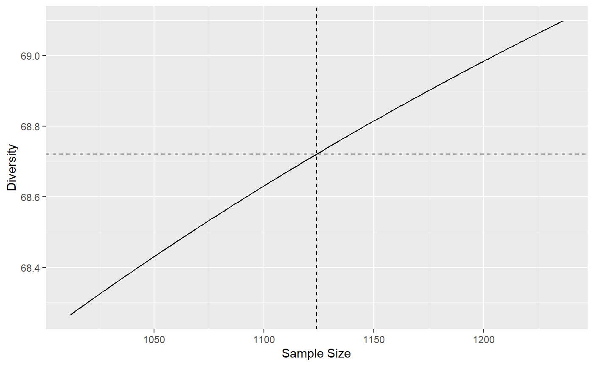
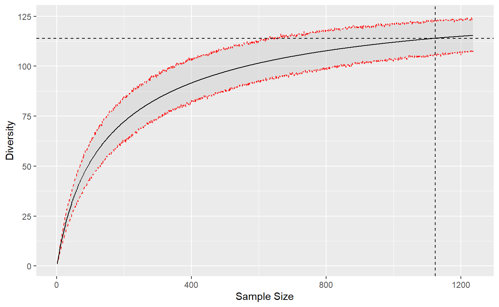
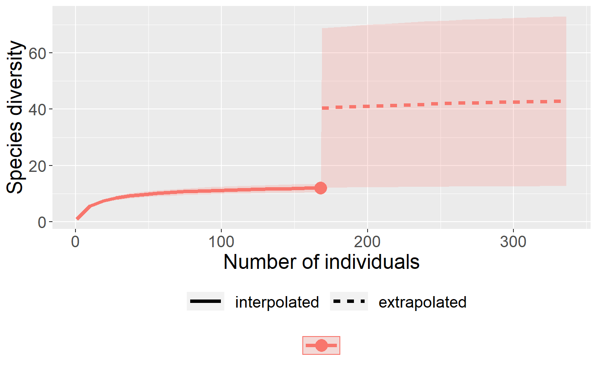
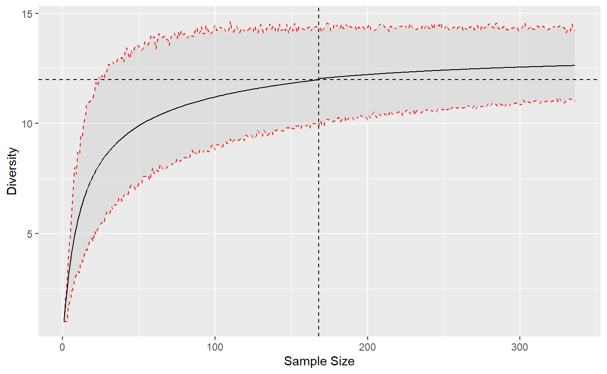

Asymptotic Estimation, Interpolation and Extrapolation
Source:vignettes/articles/extrapolation.Rmd
extrapolation.RmdEstimation of diversity in entropart relies on classical assumptions that are recalled here. The observed data is a sample of a community (or several communities if data is a meta-community). All “reduced-bias estimator” are asymptotic estimators of the community diversity: if the sample size could be extended infinitely, diversity would tend to the diversity of the whole (asymptotic) community. In hyperdiverse ecosystems such as evergreen forests, the asymptotic community generally does not exist in the field because of environmental variations: increasing the size of the sample results in sampling in different communities. Thus, the asymptotic estimators of diversity correspond to theoretical asymptotic communities that do not necessarily exist. In other words, the asymptotic diversity is that of a community that would provide the observed sample.
Diversity is accumulated as a function of sample size. HCDT entropy (thus Hill numbers and phylodiversity) can be estimated at any sample size (Chao et al. 2014), by interpolation down from the actual sample size and by extrapolation up to infinite sample size, i.e. the asymptotic estimator. Alternatively, sample size may be replaced by sample coverage, by interpolation from arbitrary small sample coverages to that of the actual sample, and by extrapolation up to the asymptotic estimator whose sample coverage is 1.
Asymptotic estimation
If community data is a vector of probabilities, sample size is unknown so the only available estimation is that of the actual sample.
library("entropart")
data("Paracou618")
# 2 ha of tropical forest, distribution of probabilities
ParacouP <- Paracou618.MC$Ps
# Diversity of order 1, no reduce-bias estimator used.
Diversity(ParacouP, q=1)## None
## 113.98Further estimation requires abundance vectors, i.e. the number of individuals per species. Then, the default estimator is the asymptotic one.
# 2 ha of tropical forest, distribution of abundances
ParacouN <- Paracou618.MC$Ns
# Diversity of order 1, best asymptotic estimator used.
Diversity(ParacouN, q=1)## UnveilJ
## 138.1078Several asymptotic estimators are available in the literature and implemented in entropart. For consistency, entropart uses the jackknife estimator of richness and the unveiled jackknife estimator for entropy. The advantage of these estimators is that they provide reliable estimations even though the sampling effort is low: then, the estimation variance increases but its bias remains acceptable because the order of the jackknife estimator is chosen according to the data. Poorly-sampled communities are estimated by a higher-order jackknife, resulting in higher estimation variance.
For well-sampled communities, i.e. in the domain of validity of the jacknife of order 1, The Chao1 estimator of diversity and the Chao-Jost estimator of entropy are the best choices because they have the best mathematical support, but they will severely underestimate the diversity of poorly-sampled communities. They also are more computer-intensive.
## Jackknife 2
## 359## Chao1
## 314.9348# Diversity of order 1 underestimated by Chao-Jost estimator
Diversity(ParacouN, q=1, Correction="ChaoJost")## ChaoJost
## 133.2409Choosing the estimation level
Asymptotic estimation is not always the best choice, for example when comparing the diversity of poorly-sampled communities: a lower sample coverage can be chosen to limit the uncertainty of estimation.
## ZhangHuang
## 0.9226675The estimation level may be a sample size or a sample coverage that is converted internally into a sample size.
# Diversity at half the sample size (interpolated)
Diversity(ParacouN, q=1, Level=round(sum(ParacouN)/2))## Interp
## 100.016## [1] 861## Interp
## 109.1493## Interp
## 109.1493If the sample size is smaller than the actual sample, entropy is interpolated.
If it is higher, entropy must be extrapolated. For diversity orders equal to 0 (richness), 1 (Shannon) or 2 (Simpson), explicit, almost unbiased estimators are used. Continuity of the estimation of diversity around the actual sample size is guaranted.
# Simpson diversity at levels from 0.9 to 1.1 times the sample size
Accumulation2 <- DivAC(ParacouN, q=2, n.seq=round(0.9*sum(ParacouN)):round(1.1*sum(ParacouN)))
For non-integer orders, things get more complicated. In entropart, asymptotic entropy is estimated by the unveiled jackknife estimator and rarefied down to the actual sample size. There is no reason for it to correspond exactly to the observed entropy. The asymptotic richness is the less robust part of the estimation thus it is adjusted iteratively until the rarefied entropy equals the actual sample’s entropy, ensuring continuity between interpolation and extrapolation.
The default arguments of all functions apply this strategy, except for Simpson’s diversity (\(q=2\)) that is estimated directly without bias.
Diversity accumulation
Diversity Accumulation Curves (DAC) are a generalization of the well-known Species Accumulation Curves (SAC). They represent diversity as a function of sample size.
The DivAc()function allows to build them. A bootstrap confidence interval can be calculated around the estimated DAC by simulating random multinomial draws of the asymptotic distribution at each sample size.
# Diversity at levels from 1 to twice the sample size
Accumulation <- DivAC(ParacouN, q=1, n.seq=1:(1.1*sum(ParacouN)), NumberOfSimulations = 1000)
To ensure continuity of the DAC around the actual sample, the asymptotic diversity is estimated by unveiling the asymptotic distribution, choosing the number of species such that the rarefied diversity at the observed sample size is the observed diversity. This means that the extrapolated diversity at a high sample coverage will differ from the best asymptotic estimation, sometimes quite much if sampling level is poor.
## Best
## 128.3196## UnveilJ
## 138.1078## ChaoJost
## 133.2409Diversity profiles at a sampling level
Diversity profiles are usually asymptotic but they can be calculated at any coverage of sampling level.
# Diversity at levels from 1 to twice the sample size
Profile <- CommunityProfile(Diversity, ParacouN, Level=sum(ParacouN)*1.5)
autoplot(Profile)
Extrapolated diversity is estimated at each order such that it is continuous at the observed sample size.
Differences with the iNEXT package
iNEXT (Hsieh, Ma, and Chao 2016) is designed primarily to interpolate or extrapolate diversity of integer orders. Extrapolation of diversity of order 0 relies on the Chao1 estimator of richness and that of order 1 uses the Chao-Jost estimator. In entropart, extrapolation relies on the estimation of the asymptotic distribution of the community with asymptotic richness such that the entropy of the asymptotic distribution rarefied to the observed sample size equals the observed entropy of the data. This approach allows consistent estimation of extrapolated diversity at integer and non-integer orders, thus allowing consistent diversity profiles without discontinuities at \(q=0\) and \(q=1\). The results of iNEXT can be obtained by forcing argument PCorrection = "None" to avoid estimating the asymptotic distribution and Correction="Chao1" for richness or Correction="ChaoJost" for Shannon’s diversity.
library("iNEXT")
data(spider)
# Extrapolated diversity of an example dataset
estimateD(spider$Girdled, level=300)## m method order SC qD qD.LCL qD.UCL
## 1 300 extrapolated 0 0.958 33.318 25.047 41.589
## 2 300 extrapolated 1 0.958 12.867 10.338 15.396
## 3 300 extrapolated 2 0.958 7.984 6.344 9.624# Similar estimation by entropart
Diversity(spider$Girdled, q=0, Level=300, Correction="Chao1", PCorrection = "None")## Chao1
## 33.31773## ChaoJost
## 12.8073# Estimation at order 2 is explicit, with no optional choice
Diversity(spider$Girdled, q=2, Level=300)## Chao2014
## 7.983882## Best
## 32.09179## Best
## 12.61092Small differences are due to different estimators of sample coverage: entropart uses the more acurate ZhangHuang estimator by default.
At non-integer orders of diversity, iNEXT estimates the extrapolated diversity as a sum of factors of the probabilities of the communities (Chao et al. 2014, Appendix E, last equation of page 2). The same technique of estimation as that of the Chao-Shen estimator of diversity is used but it does not work very well close to \(q=1\) for instance and seems to overestimate diversity at higher orders.

# Same estimation by entropart
autoplot(DivAC(spider$Girdled, q=1.01, n.seq=1:(2*sum(spider$Girdled)), NumberOfSimulations = 1000))
Last, confidence intervals of diversity accumulation assume normality in iNEXT: estimation variance is estimated by bootstrap and the confidence interval is defined as \(\pm 1.96\) times the standard deviation. In entropart, confidence intervals are built directly from the quantiles of bootstrapped estimations.
References
Chao, Anne, Nicholas J. Gotelli, T. C. Hsieh, Elizabeth L. Sander, K. H. Ma, Robert K. Colwell, and Aaron M. Ellison. 2014. “Rarefaction and extrapolation with Hill numbers: A framework for sampling and estimation in species diversity studies.” Ecological Monographs 84 (1): 45–67. https://doi.org/10.1890/13-0133.1.
Hsieh, T. C., K. H. Ma, and Anne Chao. 2016. “iNEXT: An R package for interpolation and extrapolation in measuring species diversity.” Methods in Ecology and Evolution 7: 1451–6. https://doi.org/10.1111/2041-210X.12613.